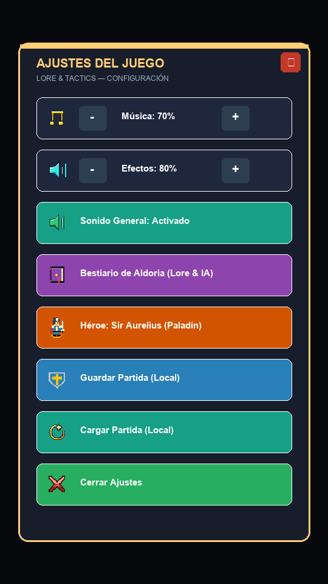
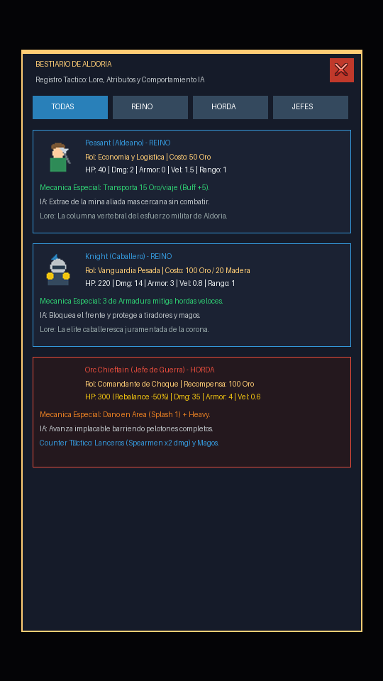
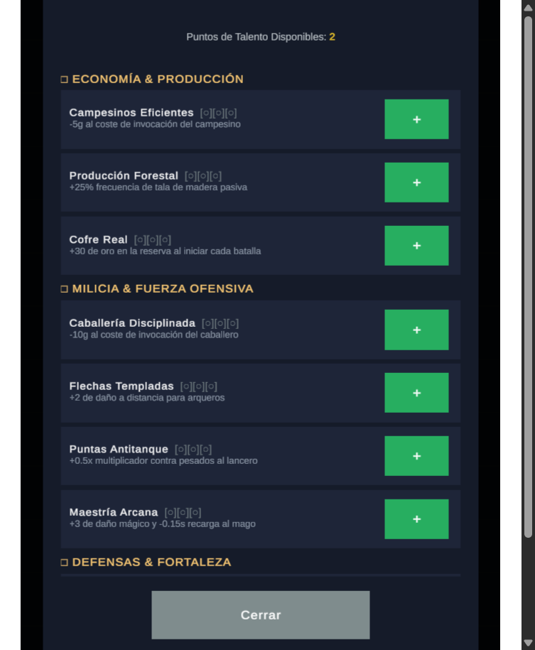
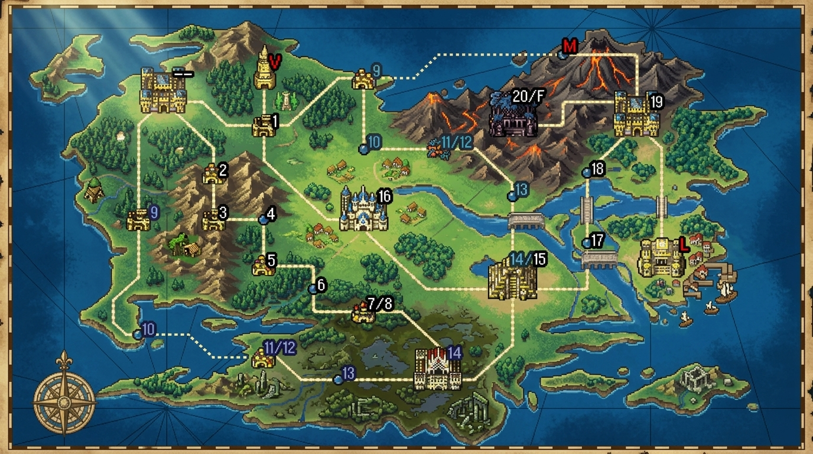

🖼️ Galería de Capturas In-Game (Build WebGL v1.2)

1. Acceso & Autenticación
Inicio de sesión simulado compatible con Google/Apple y persistencia local Supabase/Guest.

2. Campaña: Mapa del Overworld (10 Niveles)
Overworld con 10 misiones, 4 biomas, 2 jefes zonales y accesos al Mercado, Talentos, Bestiario y Ajustes.

3. Cuadrícula de Batalla Vertical & HUD Móvil
Carril vertical 9:16 con TopBar modular de chips, iconos pixel art y despliegue rápido.

4. Recolección Autónoma & Badges
Inspección de tropas con 4 badges de combate (⚔️, 🛡️, 🎯, 👟) y asignación inteligente a minas/árboles.

5. BottomDock Inferior con Pestañas
Dock scrolleable con pestañas [TODO / TROPAS / ECO] adaptado ergonómicamente a Safe Area móvil.

6. Modal Unificado de Ajustes
Controles de volumen de música/SFX, silenciador general, acceso al Bestiario e iconografía pixel art en Overworld y Batalla.

7. Bestiario Táctico & Lore de IA
Consulta in-game de estadísticas, narrativa, lógica de inteligencia artificial y prioridades de combate de cada unidad.

8. Árbol de Talentos Multirama (WoW)
4 ramas de progresión persistente: Armas, Sagrado, Ingeniería y Liderazgo con dependencias jerárquicas e iconos.

9. Arte Conceptual: Mapamundi Continental
Visión estratégica 16-bit estilo Fire Emblem GBA con capital central, 4 biomas cardinales, redes de caminos, volcanes y fortalezas de misión.